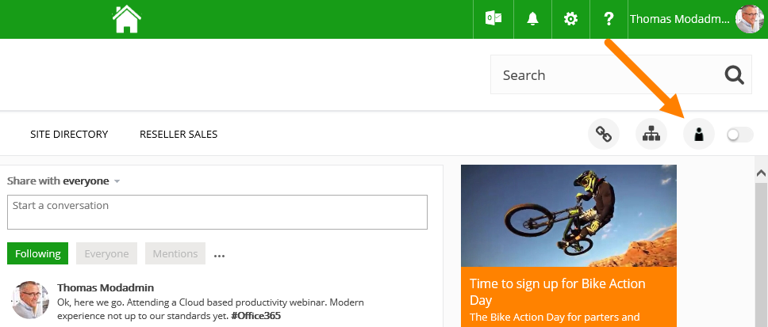

Click the Omnia Admnin icon to open Omnia Administration:

Omnia Admin is context sensitive. The left-hand navigation and available features may differ from site to site based on user permission and on what is installed.
The following is available. "Tenant scoped" means one setting for all site collections in Omnia. "Site collection scoped" means one setting for all sites in the current site collection, and finally "Site scoped", it's settings applied to just one site.
Also see: